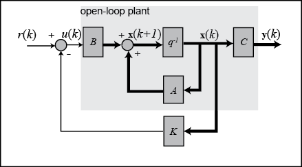

控制系统建模
引言
系统建模（System Modeling）是控制系统设计的基础。一个核心原则是：你只能控制你能建模的系统。无论是设计PID控制器、状态反馈控制律，还是基于模型预测控制（Model Predictive Control，MPC），都需要一个准确的数学模型来描述系统的动态行为。
数学模型将物理世界中的机械、电气、热力学等现象转化为可以用计算工具分析和设计的方程组。模型的精度直接决定了控制器的性能上限：模型误差越大，控制器的鲁棒性要求越高，性能越难保证。
本文介绍控制系统建模的四种主要表示形式——微分方程、差分方程、传递函数和状态空间——并通过直流电机、倒立摆和移动机器人等具体示例展示建模的完整流程。
系统可以用以下方式之一来描述：
- 微分方程 (Differential Equation)
- 差分方程 (Difference Equation)
- 传递函数 (Transfer Function)
- 状态空间 (State Space)
微分方程 (Differential Equation)
微分方程是描述连续时间动态系统最直接的方式。它直接来源于物理定律（牛顿定律、基尔霍夫定律、热力学定律等），具有明确的物理意义。
基本形式
一般 阶线性常系数常微分方程的形式为：
其中 是系统输出， 是系统输入。
物理解释
微分方程中各项通常对应系统中的能量存储或耗散机制：
- 惯性项（含最高阶导数）：对应能量存储，如质量的动能、电感储能
- 阻尼项（含一阶导数）：对应能量耗散，如阻尼力、电阻热耗散
- 刚度/恢复力项（零阶项）：对应势能存储，如弹簧弹性势能、电容储能
弹簧-质量-阻尼系统
弹簧-质量-阻尼系统（Mass-Spring-Damper System）是控制理论中最经典的机械系统示例。
设质量块质量为 ，弹簧刚度系数为 ，阻尼系数为 ，外力为 ，位移为 ，由牛顿第二定律得：
各项的物理含义：
- ：惯性力，质量乘以加速度
- ：阻尼力，与速度成正比（方向相反）
- ：弹簧恢复力，与位移成正比（方向相反）
- ：外部激励力
这是一个二阶系统，需要两个初始条件 和 才能唯一确定解。
直流电机模型
直流电机（DC Motor）是机器人系统中最常见的执行机构，其电气和机械方程分别为：
电气方程（基于基尔霍夫电压定律）：
其中： - ：电枢电感（Armature Inductance），单位 H - ：电枢电阻（Armature Resistance），单位 Ω - ：电枢电流，单位 A - ：输入电压，单位 V - ：反电动势系数（Back-EMF Constant），单位 V·s/rad - ：电机转速，单位 rad/s
机械方程（基于牛顿第二定律的转动形式）：
其中： - ：转动惯量（Moment of Inertia），单位 kg·m² - ：转矩常数（Torque Constant），单位 N·m/A - ：粘性摩擦系数（Viscous Friction Coefficient），单位 N·m·s/rad
这两个耦合的微分方程完整描述了直流电机的动态特性。
差分方程 (Difference Equation)
差分方程（Difference Equation）用于描述离散时间系统，是连续微分方程经过离散化后的形式，也是数字控制器在计算机上实现的基础。
基本形式
一阶差分方程：
一般 阶线性差分方程：
其中下标 表示第 个采样时刻， 为采样周期（Sampling Period）。
与连续系统的关系
连续微分方程可以通过不同方法转化为差分方程：
| 方法 | 连续微分 → 差分近似 | 特点 |
|---|---|---|
| 前向欧拉（Forward Euler） | 简单，可能不稳定 | |
| 后向欧拉（Backward Euler） | 较稳定，有相位误差 | |
| 双线性变换（Bilinear/Tustin） | 保持频率响应特性 | |
| 零阶保持（Zero-Order Hold，ZOH） | 精确离散化 | 最精确 |
传递函数 (Transfer Function)
传递函数是在拉普拉斯域（Laplace Domain）描述线性时不变（Linear Time-Invariant，LTI）系统输入输出关系的方法。对于初始条件为零的系统，传递函数定义为输出的拉普拉斯变换与输入的拉普拉斯变换之比：
多项式形式 (Polynomial Form)
对于物理可实现系统，要求分子阶次不超过分母阶次，即 。
零极点形式 (Poles and Zeros)
其中 为增益， 为零点（Zeros）， 为极点（Poles）。
极点与零点的物理意义
极点（Poles）是使传递函数分母为零的 值，决定系统的自然响应（Natural Response）：
- 实数负极点 ：对应指数衰减模态 ，系统稳定
- 实数正极点 ：对应指数增长模态，系统不稳定
- 共轭复数极点 ：对应衰减振荡
- 纯虚数极点 ：对应等幅振荡，临界稳定
零点（Zeros）是使传递函数分子为零的 值，影响系统对特定频率的响应：
- 零点可以抵消极点（若两者重合，称为极零相消）
- 右半平面零点（非最小相位，Non-Minimum Phase）会导致系统响应出现初始反向（Undershoot）
标准二阶系统
控制理论中最重要的参考模型是标准二阶系统（Standard Second-Order System）：
参数含义：
- ：无阻尼自然频率（Undamped Natural Frequency），单位 rad/s
- ：阻尼比（Damping Ratio），无量纲
阻尼比决定系统的响应特性：
| 阻尼比范围 | 系统类型 | 阶跃响应特征 |
|---|---|---|
| 无阻尼（Undamped） | 等幅振荡 | |
| 欠阻尼（Underdamped） | 衰减振荡，有超调 | |
| 临界阻尼（Critically Damped） | 无超调，最快无振荡收敛 | |
| 过阻尼（Overdamped） | 无超调，响应较慢 |
其极点为：
欠阻尼情况下（），极点为共轭复数：
其中 称为有阻尼自然频率（Damped Natural Frequency）。
直流电机的闭环传递函数
将直流电机的电气方程和机械方程进行拉普拉斯变换：
电气方程：
机械方程：
消去 ，得到从电压 到转速 的开环传递函数：
展开分母：
这是一个标准二阶系统，可以与 的形式对比，提取 和 。
波特图简介
波特图（Bode Plot）是频率响应分析的主要工具，包含两个图：
- 幅频特性：纵轴为增益（单位 dB），横轴为频率（对数坐标）
- 相频特性：纵轴为相角（度），横轴为频率（对数坐标）
通过波特图可以直观判断：
- 增益裕度（Gain Margin）：系统在相角为 -180° 时允许的额外增益，衡量稳定裕量
- 相位裕度（Phase Margin）：系统在增益为 0 dB 时距离 -180° 的相位余量
- 带宽（Bandwidth）：增益下降 3 dB 时对应的频率，衡量系统响应速度
状态空间 (State Space)
状态空间（State Space）表示是一种更为通用的系统描述方式，可以处理多输入多输出（Multi-Input Multi-Output，MIMO）系统和非线性系统，是现代控制理论的基础。

标准形式
矩阵含义：
- ：状态向量（State Vector），维度为 ，包含系统内部的完整信息
- ：系统矩阵（System Matrix），维度为 ，描述状态间的相互作用
- ：输入矩阵（Input Matrix），维度为 ，描述输入对状态的影响（ 为输入数）
- ：输出矩阵（Output Matrix），维度为 ，描述哪些状态被测量（ 为输出数）
- ：前馈矩阵（Feedforward Matrix），维度为 ，描述输入直接影响输出的部分
重要性质：传递函数的极点就是系统矩阵 的特征值（Eigenvalues）。
传递函数与状态空间的关系：
能控性与能观性
能控性（Controllability）：能否通过选择输入 在有限时间内将系统从任意初始状态转移到任意目标状态。
能控性矩阵（Controllability Matrix）：
若 满秩（rank ），则系统完全能控。能控性是状态反馈控制（如极点配置、LQR）的必要条件。
能观性（Observability）：能否仅通过观测输出 在有限时间内唯一确定系统的初始状态（进而确定所有状态）。
能观性矩阵（Observability Matrix）：
若 满秩（rank ），则系统完全能观。能观性是设计状态观测器（如卡尔曼滤波器，Kalman Filter）的必要条件。
直流电机状态空间模型
选择状态变量 （电流和角速度），输入 （电压），输出 （转速）：
由电气方程 ，得：
由机械方程 ，得：
写成矩阵形式：
即：
倒立摆状态空间模型
倒立摆（Inverted Pendulum）系统的状态变量选为小车位置 、小车速度 、摆角 （以垂直向上为零点）、摆角速率 ：
在直立平衡点（）附近线性化后，状态方程为：
其中 为小车质量， 为摆杆质量， 为摆杆长度， 为重力加速度， 为施加在小车上的水平力。
典型系统建模示例
DC 电机完整建模
物理建模
直流电机由电气子系统和机械子系统组成，通过电磁耦合：
步骤 1：建立物理方程
电气回路（基尔霍夫电压定律）：
其中反电动势（Back Electromotive Force），所以：
机械转动（牛顿第二定律，转动形式）：
步骤 2：整理状态方程
选状态 ，输入 ：
步骤 3：选择输出
若输出为角速度：，
若输出为位置角 ，需增加一个积分状态，状态扩展为 ，在 矩阵末行添加 。
步骤 4：验证能控性
行列式 （在正常参数下），系统完全能控。
倒立摆建模
非线性方程推导
设小车质量为 ，摆杆质量为 ，摆杆长度为 （质心到铰接点距离），小车位置为 ，摆角为 （从竖直向上量起），外力为 。
利用拉格朗日（Lagrangian）方法得到非线性运动方程：
在平衡点线性化
在平衡点 ，，， 处，令 ，，：
整理后得线性状态空间模型（状态 ）：
注意矩阵 有正实部特征值（对应不稳定的倒立平衡），必须通过主动控制稳定。
移动机器人运动学建模
差速驱动机器人（Differential Drive Robot）是移动机器人中最常见的结构。设机器人在二维平面内运动，位姿（Pose）为 ，其中 为位置， 为朝向角。
运动学模型
控制输入为线速度 和角速度 ，运动学方程为：
写成向量形式：
从轮速到速度
设左右轮线速度分别为 和 ，轮距为 ，则：
模型特点
差速驱动模型是非完整约束（Nonholonomic Constraint）系统：机器人不能横向移动（侧移），即在任意时刻满足约束：
非完整约束使得路径规划和控制比完整约束系统更为复杂。
线性化 (Linearization)
大多数实际物理系统都是非线性的，但非线性系统的分析和控制设计比线性系统困难得多。线性化（Linearization）是在某一工作点附近用线性模型近似非线性模型的技术。
泰勒展开线性化
设非线性系统：
在工作点（Operating Point） 处，利用泰勒展开（Taylor Expansion）忽略高阶项，得到线性近似：
若 是平衡点（），令偏差量 ，，则：
其中雅可比矩阵（Jacobian Matrix）：
线性化示例：单摆
单摆（Simple Pendulum）方程：
令状态 ，则：
在平衡点 （悬垂平衡）处线性化：
得到线性化系统，即熟知的简谐振荡模型 。
线性化的有效范围
线性化仅在工作点邻域内有效。偏离工作点越远，线性化误差越大。一般来说，当偏差量满足以下条件时，线性近似具有工程意义：
- 状态偏差 较小，非线性项可以忽略
- 系统不存在分叉（Bifurcation）或混沌（Chaos）行为
- 对于周期运动，可在轨迹的每个点处进行局部线性化（时变系统方法）
Python 代码示例
直流电机仿真
import numpy as np
from scipy import signal
import matplotlib.pyplot as plt
# 直流电机参数
R = 1.0 # 电枢电阻 (Ohm)
L = 0.5 # 电枢电感 (H)
Ke = 0.01 # 反电动势系数 (V·s/rad)
Kt = 0.01 # 转矩常数 (N·m/A)
J = 0.01 # 转动惯量 (kg·m²)
B = 0.1 # 粘性摩擦系数 (N·m·s/rad)
# 状态空间矩阵，状态 x = [电流 i, 角速度 ω]
A = np.array([[-R/L, -Ke/L],
[Kt/J, -B/J]])
B_mat = np.array([[1/L],
[0]])
C = np.array([[0, 1]]) # 输出角速度
D = np.array([[0]])
# 构建状态空间系统
sys = signal.StateSpace(A, B_mat, C, D)
# 阶跃响应仿真
t, y = signal.step(sys)
plt.figure(figsize=(8, 4))
plt.plot(t, y, 'b-', linewidth=2)
plt.xlabel('时间 (s)')
plt.ylabel('角速度 (rad/s)')
plt.title('直流电机阶跃响应')
plt.grid(True)
plt.tight_layout()
plt.show()
print(f"A 矩阵特征值（即极点）: {np.linalg.eigvals(A)}")
能控性与能观性分析
import numpy as np
def controllability_matrix(A, B):
"""计算能控性矩阵"""
n = A.shape[0]
cols = [B]
for i in range(1, n):
cols.append(np.linalg.matrix_power(A, i) @ B)
return np.hstack(cols)
def observability_matrix(A, C):
"""计算能观性矩阵"""
n = A.shape[0]
rows = [C]
for i in range(1, n):
rows.append(C @ np.linalg.matrix_power(A, i))
return np.vstack(rows)
# 直流电机参数（沿用上方定义）
R, L, Ke, Kt, J, B = 1.0, 0.5, 0.01, 0.01, 0.01, 0.1
A = np.array([[-R/L, -Ke/L],
[Kt/J, -B/J]])
B_mat = np.array([[1/L], [0]])
C = np.array([[0, 1]])
C_mat = controllability_matrix(A, B_mat)
O_mat = observability_matrix(A, C)
print(f"能控性矩阵秩: {np.linalg.matrix_rank(C_mat)} (系统阶数 n={A.shape[0]})")
print(f"能观性矩阵秩: {np.linalg.matrix_rank(O_mat)} (系统阶数 n={A.shape[0]})")
传递函数与波特图
import numpy as np
from scipy import signal
import matplotlib.pyplot as plt
# 直流电机传递函数参数
R, L, Ke, Kt, J, B = 1.0, 0.5, 0.01, 0.01, 0.01, 0.1
# 分子分母多项式系数
num = [Kt]
den = [L*J, L*B + R*J, R*B + Ke*Kt]
sys_tf = signal.TransferFunction(num, den)
# 波特图
w, mag, phase = signal.bode(sys_tf)
fig, (ax1, ax2) = plt.subplots(2, 1, figsize=(8, 6))
ax1.semilogx(w, mag)
ax1.set_ylabel('幅值 (dB)')
ax1.set_title('直流电机波特图')
ax1.grid(True, which='both')
ax2.semilogx(w, phase)
ax2.set_xlabel('频率 (rad/s)')
ax2.set_ylabel('相角 (°)')
ax2.grid(True, which='both')
plt.tight_layout()
plt.show()
离散时间系统 (Discrete-Time System)
数字控制器在计算机上以固定采样周期 运行，因此需要将连续时间模型离散化为离散时间模型。
离散化方法
前向欧拉法（Forward Euler）
用差分近似导数：
代入连续状态方程：
因此离散化矩阵：
前向欧拉法简单，但对于大 或不稳定系统可能导致数值不稳定。
零阶保持法（Zero-Order Hold，ZOH）
ZOH 假设在每个采样间隔内输入保持恒定，其精确离散化结果为：
ZOH 方法在采样间隔内精确还原连续系统的行为，是工程中最常用的离散化方法。
离散时间状态方程：
采样定理与采样频率选择
奈奎斯特-香农采样定理（Nyquist-Shannon Sampling Theorem）规定，采样频率 至少要大于系统最高频率分量的两倍。
在控制工程实践中，常用经验规则：
其中 为闭环系统带宽。采样过慢会引入相位滞后，影响稳定裕度。
Python 离散化示例
import numpy as np
from scipy import signal
# 连续时间直流电机模型
R, L, Ke, Kt, J, B = 1.0, 0.5, 0.01, 0.01, 0.01, 0.1
A = np.array([[-R/L, -Ke/L],
[Kt/J, -B/J]])
B_mat = np.array([[1/L], [0]])
C = np.array([[0, 1]])
D = np.array([[0]])
sys_c = signal.StateSpace(A, B_mat, C, D)
# 采样周期
Ts = 0.01 # 10ms
# 使用 ZOH 方法离散化
sys_d = sys_c.to_discrete(Ts, method='zoh')
print("连续系统 A 矩阵:")
print(A)
print("\n离散系统 Ad 矩阵 (ZOH):")
print(sys_d.A)
print("\n连续系统极点:", np.linalg.eigvals(A))
print("离散系统极点:", np.linalg.eigvals(sys_d.A))
# 验证：离散极点应该是 exp(连续极点 * Ts)
cont_poles = np.linalg.eigvals(A)
print("exp(连续极点 * Ts):", np.exp(cont_poles * Ts))
离散系统稳定性条件：所有极点位于 平面的单位圆内（），对应连续系统极点位于左半平面的条件（）。
系统辨识简介 (System Identification)
系统辨识（System Identification）是从系统的输入输出数据中建立或修正数学模型的过程。当系统的物理参数难以直接测量或物理机理复杂时，系统辨识是获取模型的重要途径。
黑箱与灰箱辨识
黑箱辨识（Black-Box Identification）：不假设系统内部结构，完全从数据中拟合模型（如神经网络、ARX 模型）。优点是不需要先验知识，缺点是模型缺乏物理可解释性。
灰箱辨识（Grey-Box Identification）：已知系统的物理结构（如微分方程形式），但部分参数未知，通过数据估计这些参数。结合了物理先验和数据驱动的优势，在机器人系统中最为常用。
白箱（White-Box）：完全基于第一性原理（First Principles）建模，无需数据，但需要精确了解所有物理参数。
ARX 模型
自回归外生（Auto-Regressive with eXogenous Input，ARX）模型是最简单的黑箱线性模型：
其中 为噪声项。整理为线性回归形式：
最小二乘参数估计
给定 组观测数据，构建矩阵：
最小二乘估计（Least Squares Estimation）最小化预测误差的平方和：
实际系统辨识流程
- 激励信号设计：输入应包含足够丰富的频率成分（如伪随机二值序列，Pseudo-Random Binary Sequence，PRBS），以激励系统各模态
- 数据采集：记录足够长时间的输入输出数据，注意同步采样
- 数据预处理：去除直流偏移、滤波去噪、去除异常值
- 模型结构选择：选择 ARX、ARMAX、状态空间等模型结构及其阶次
- 参数估计：用最小二乘或极大似然法估计参数
- 模型验证：用独立的验证数据集评估模型精度（交叉验证）
import numpy as np
def arx_least_squares(y, u, na, nb):
"""
ARX 模型最小二乘辨识
y: 输出序列
u: 输入序列
na: 输出自回归阶次
nb: 输入阶次
返回参数向量 theta = [a1,...,ana, b1,...,bnb]
"""
N = len(y)
n = max(na, nb)
rows = N - n
Phi = np.zeros((rows, na + nb))
Y = np.zeros(rows)
for k in range(rows):
idx = k + n
for i in range(na):
Phi[k, i] = -y[idx - 1 - i]
for i in range(nb):
Phi[k, na + i] = u[idx - 1 - i]
Y[k] = y[idx]
# 最小二乘解
theta = np.linalg.lstsq(Phi, Y, rcond=None)[0]
return theta
MATLAB/Python 工具对比
在控制系统建模与分析中，MATLAB 的 Control System Toolbox 和 Python 的开源库是两大主要工具链。
| 功能 | MATLAB Control System Toolbox | Python control 库 |
Python scipy.signal |
|---|---|---|---|
| 传递函数定义 | tf(num, den) |
control.tf(num, den) |
signal.TransferFunction(num, den) |
| 状态空间定义 | ss(A, B, C, D) |
control.ss(A, B, C, D) |
signal.StateSpace(A, B, C, D) |
| 传递函数 ↔ 状态空间 | ss(sys) / tf(sys) |
control.ss(sys) / control.tf(sys) |
sys.to_ss() / sys.to_tf() |
| 极点计算 | pole(sys) |
control.poles(sys) |
sys.poles |
| 零点计算 | zero(sys) |
control.zeros(sys) |
sys.zeros |
| 阶跃响应 | step(sys) |
control.step_response(sys) |
signal.step(sys) |
| 冲激响应 | impulse(sys) |
control.impulse_response(sys) |
signal.impulse(sys) |
| 波特图 | bode(sys) |
control.bode_plot(sys) |
signal.bode(sys) |
| 离散化 | c2d(sys, Ts, 'zoh') |
control.c2d(sys, Ts, 'zoh') |
sys.to_discrete(Ts, method='zoh') |
| 能控性矩阵 | ctrb(A, B) |
control.ctrb(A, B) |
需手动实现 |
| 能观性矩阵 | obsv(A, C) |
control.obsv(A, C) |
需手动实现 |
| 极点配置 | place(A, B, poles) |
control.place(A, B, poles) |
需手动实现 |
| LQR 设计 | lqr(A, B, Q, R) |
control.lqr(A, B, Q, R) |
不支持 |
| 卡尔曼滤波器 | kalman(sys, Qn, Rn) |
control.lqe(A, G, C, Qd, Rd) |
不支持 |
| 授权 | 商业许可 | MIT（开源） | BSD（开源） |
| 主要优势 | 功能完整、文档丰富、Simulink 集成 | 与 NumPy/SciPy 生态无缝衔接 | 标准科学计算库，无需额外安装 |
安装 Python control 库：
pip install control
Python control 库基本用法示例：
import control
import numpy as np
import matplotlib.pyplot as plt
# 定义传递函数 G(s) = 1 / (s^2 + 2s + 1)
G = control.tf([1], [1, 2, 1])
# 阶跃响应
t, y = control.step_response(G)
plt.plot(t, y)
plt.title('系统阶跃响应')
plt.xlabel('时间 (s)')
plt.ylabel('幅值')
plt.grid(True)
plt.show()
# 波特图
control.bode_plot(G, dB=True)
# 极点与零点
print("极点:", control.poles(G))
print("零点:", control.zeros(G))
# 定义状态空间系统
A = np.array([[0, 1], [-1, -2]])
B = np.array([[0], [1]])
C = np.array([[1, 0]])
D = np.array([[0]])
sys_ss = control.ss(A, B, C, D)
# 能控性分析
Wc = control.ctrb(A, B)
print(f"能控性矩阵秩: {np.linalg.matrix_rank(Wc)}")
Matlab 函数参考
传递函数 (Transfer Function)
s = tf('s')
G = feedback(G_plant, H_sensor) % 闭环传递函数
G = zpk(sys) % 转换为零极点增益形式
G = zpk([zeros], [poles], gain) % 直接定义零极点增益形式
零极点 (Poles and Zeros)
查找 SISO 或 MIMO 系统的极点：
pole(sys) % 计算极点
zero(sys) % 计算零点
pzplot(sys) % 绘制零极点图
状态空间 (State Space)
sys = ss(A, B, C, D) % 连续时间状态空间模型
sys = ss(A, B, C, D, Ts) % 离散时间状态空间模型（采样周期 Ts）
sys_ss = ss(sys_tf) % 从传递函数转换为状态空间
Wc = ctrb(A, B) % 能控性矩阵
Wo = obsv(A, C) % 能观性矩阵
sys_d = c2d(sys_c, Ts, 'zoh') % 连续转离散（ZOH 方法）
系统分析 (System Analysis)
linearSystemAnalyzer(G, T1, T2) % 图形化线性系统分析工具
step(sys) % 阶跃响应
impulse(sys) % 冲激响应
bode(sys) % 波特图
nyquist(sys) % 奈奎斯特图
margin(sys) % 增益裕度和相位裕度
参考资料
- Control Tutorials, Inverted Pendulum: Digital Controller Design, University of Michigan
- K. Ogata, Modern Control Engineering, 5th ed., Prentice Hall, 2010.
- R. C. Dorf and R. H. Bishop, Modern Control Systems, 13th ed., Pearson, 2017.
- G. F. Franklin, J. D. Powell, and A. Emami-Naeini, Feedback Control of Dynamic Systems, 8th ed., Pearson, 2019.
- L. Ljung, System Identification: Theory for the User, 2nd ed., Prentice Hall, 1999.
- Python Control Systems Library, python-control.readthedocs.io
- SciPy Signal Processing, docs.scipy.org/doc/scipy/reference/signal.html